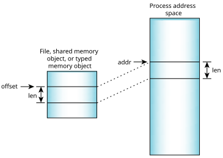

Map a memory region into a process's address space
#include <sys/mman.h>
void * mmap( void * addr,
size_t len,
int prot,
int flags,
int filedes,
off_t off );
void * mmap64( void * addr,
size_t len,
int prot,
int flags,
int filedes,
off64_t off );
void * mmap_handle( void * addr,
size_t len,
int prot,
int flags,
shm_handle_t handle,
off_t off );
void * mmap_handle_pid( void * addr,
size_t len,
int prot,
int flags,
shm_handle_t handle,
pid_t pid,
off_t off );
This address doesn't have to be page-aligned (i.e., a multiple of PAGESIZE) but if you specify MAP_FIXED in flags, the address must be aligned with off, or the function fails. For more information, refer to the MAP_FIXED description below.
The following are Unix or QNX OS extensions:
For more information, see below.
Memory that's mapped from a typed-memory file descriptor is implicitly locked. Shared memory objects that are populated with shm_ctl() are implicitly locked.
Both the addr and off values get page-aligned by the function, so the returned pointer refers to the start of the corresponding memory page plus this offset (i.e., the exact physical address of the memory block). For instance, if off is 8, then the mapped address that gets returned is modulo PAGESIZE 8.
If you specify MAP_FIXED in flags, off must be aligned with addr, or the function fails. For more information, refer to the MAP_FIXED description below.
libc
Use the -l c option to qcc to link against this library. This library is usually included automatically.
The mmap() and mmap64() functions map a region within the object specified by filedes, beginning at off and continuing for len, into the caller's address space and return the location.
Classificationin
What's in a Function Description?.
The mmap_handle() and mmap_handle_pid() functions are similar to mmap(), but they use the shared memory object handle created by shm_create_handle() instead of a file descriptor.
The mmap_handle_pid() function provides increased security because it allows a process to verify that a given handle came from a particular process pid. This is helpful in situations when a process that wants to use a shared memory object (the consumer) might have received handles from multiple processes that created handles (producers) but doesn't trust at least one of them. For an example of such a situation, see the description for shm_open_handle_pid().
The object that you map from can be one of the following:
If filedes isn't NOFD, you must have opened the file descriptor for reading, no matter what value you specify for prot; write access is also required for PROT_WRITE if you haven't specified MAP_PRIVATE.
For mmap_handle_pid(), the object that you map from must be a shared memory object.

Typically, you don't need to use addr; you can just pass NULL instead. Mappings, including the flags, are maintained across a fork().
The flags argument includes a type (masked by the MAP_TYPE bits) and additional bits. You must specify one of the following types:
You can OR the following flags into the above type to further specify the mapping:
MAP_ANON is most commonly used with MAP_PRIVATE, but you can use it with MAP_SHARED to create a shared memory area for forked applications:
Map below the given addr, if possible. The addr argument to mmap*() is a hint as to where to put the mapped region in the caller's address space (unless combined with MAP_FIXED, which turns it into a strong requirement). MAP_BELOW changes the meaning of the hint to be where the region should end instead of where it should begin.
If MAP_BELOW is set, the memory manager searches downwards, proceeding to the bottom of the address space, and may wrap around if no hole of the required size is available. Therefore, the mapping may be made at an address larger than addr.
If MAP_BELOW isn't set, the memory manager searches upwards, proceeding to the top, and may wrap around if necessary. Therefore, the mapping may be made at an address smaller than addr.
paddr = mmap(vaddr+7, 1, PROT_READ, MAP_SHARED|MAP_FIXED, fd, 1);Here, we assume that vaddr contains a page-aligned address and we deliberately add 7 bytes to attain an address that's a bit beyond the start of the memory page, and pass this into the addr argument. Because we set the off argument to 1, these two values are misaligned. If we specified vaddr + 1, then the call would succeed.
If addr isn't NULL and you don't set MAP_FIXED, then the value of addr is taken as a hint as to where to map the object into the calling process's address space. The mapped area won't overlay any current mapped areas. Refer to the MAP_BELOW description above for information on what happens if the hint in addr can't be followed.
Direct physical mappings are extremely dangerous, especially when the mapped region overlaps RAM and is not used for mapping device memory. The memory manager does not track such mappings as allocations and, thus, the physical memory may be freed and then potentially reallocated while the mappings exist. The implications both to safety and security are severe.
The QNX OS provides better mechanisms for scenarios traditionally handled by such mappings, including typed memory and shared-memory handles.
If you do have to use MAP_PHYS to map physical memory, your process must have the PROCMGR_AID_MEM_PHYS ability enabled; you don't need this ability if you also specify MAP_ANON. For more information, see procmgr_ability().
If you use MAP_PHYS with MAP_ANON, mmap*() allocates physically contiguous memory and ignores the offset. You should almost always use these flags with MAP_SHARED; if you use them with MAP_PRIVATE, QNX OS creates a physically contiguous memory object with zero-filled pages and then privatizes it, meaning the OS creates a copy in which there's no guarantee of contiguity.
If you're mapping device memory or registers, you should use MAP_PHYS with MAP_SHARED. If you use MAP_PHYS with MAP_PRIVATE without MAP_ANON to map device memory or registers, then everything works until you write to any of the pages. At this point, the pages are copied and what you're pointing to is memory that isn't associated with the device you're trying to control, and the device will seem not to respond.
The following flag is defined in <sys/mman.h>, but you shouldn't use it:
Controlling processes via the /proc filesystemin the
Processeschapter of the QNX OS Programmer's Guide.
If filedes represents a typed memory object opened with either the POSIX_TYPED_MEM_ALLOCATE or POSIX_TYPED_MEM_ALLOCATE_CONTIG flag (see posix_typed_mem_open()), and there are enough resources available, mmap() maps len bytes allocated from the corresponding typed memory object that weren't previously allocated to any process in any processor that may access that typed memory object. If there aren't enough resources available, mmap() fails.
If filedes represents a typed memory object opened with the POSIX_TYPED_MEM_ALLOCATE_CONTIG flag, the allocated bytes are contiguous within the typed memory object. If the typed memory object was opened with POSIX_TYPED_MEM_ALLOCATE, the allocated bytes may be composed of noncontiguous fragments within the typed memory object. If the typed memory object was opened with neither of these flags, len bytes starting at the given offset within the typed memory object are mapped, exactly as when mapping a file or shared memory object. In this case, if two processes map an area of typed memory using the same offset and length and using file descriptors that refer to the same memory pool (either from the same port or from a different port), both processes map the same region of storage.
The address of the mapped-in object, or MAP_FAILED if an error occurred (errno is set).
Open a shared memory object and share it with other processes:
fd = shm_open( "/datapoints", O_RDWR, 0777 ); addr = mmap( 0, len, PROT_READ|PROT_WRITE, MAP_SHARED, fd, 0 );
Allocate a physically contiguous DMA buffer for a bus-mastering PCI network card:
addr = mmap( 0,
262144,
PROT_READ | PROT_WRITE | PROT_NOCACHE,
MAP_SHARED | MAP_PHYS | MAP_ANON,
NOFD,
0 );
Map a file into memory, change the memory, and then verify that the file's contents have been updated:
#include <stdlib.h>
#include <stdio.h>
#include <sys/mman.h>
#include <fcntl.h>
#include <unistd.h>
#include <string.h>
#define TESTSTRING "AAAAAAAAAA"
int main(int argc, char *argv[]) {
char buffer[80], filename[200] = "/tmp/try_it";
int fd, file_size, ret, size_written, size_read;
void *addr;
/* Write the test string into the file. */
unlink( filename);
fd = open( filename, O_CREAT|O_RDWR , 0777 );
if( fd == -1) {
perror("open");
exit(EXIT_FAILURE);
}
size_written = write( fd, TESTSTRING, sizeof (TESTSTRING) );
if ( size_written == -1 ){
perror("write");
exit(0);
}
printf( "Wrote %d bytes into file %s\n", size_written, filename );
lseek( fd, 0L, SEEK_SET );
file_size = lseek( fd, 0L, SEEK_END );
printf( "Size of file = %d bytes\n", file_size );
/* Map the file into memory. */
addr = mmap( 0, file_size, PROT_READ | PROT_WRITE, MAP_SHARED,
fd, 0 );
if (addr == MAP_FAILED) {
perror("mmap");
exit(EXIT_FAILURE);
}
/* Change the memory and synchronize it with the disk. */
memset( addr, 'B', 5 );
ret = msync( addr, file_size, MS_SYNC);
if( ret == -1) {
perror("msync");
exit(0);
}
/* Close and reopen the file, and then read its contents. */
close(fd);
fd = open( filename, O_RDONLY );
if( fd == -1) {
perror("open");
exit(EXIT_FAILURE);
}
size_read = read( fd, buffer, sizeof( buffer ) );
printf( "File content = %s\n", buffer );
close(fd);
return EXIT_SUCCESS;
}
mmap() is POSIX 1003.1 SHM|TYM; mmap64() is Large-file support; mmap_handle() is QNX OS; mmap_handle_pid() is QNX OS
| Safety: | |
|---|---|
| Cancellation point | No |
| Signal handler | Yes |
| Thread | Yes |